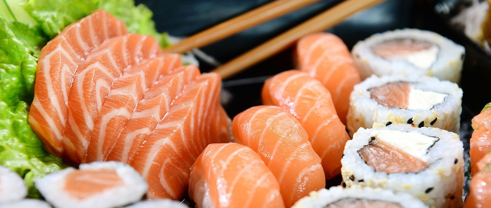

Follow us here
.png)

Sign up to our Newsletter
Stay up to date with new articles, recommendations, promotions and much more. We will not share your information with any third parties and you can unsubscribe at any time.
Avaliable in every High Street food store, and a lunchtime favourite among office workers, sushi could be providing more than a tasty lunch.Scientists believe it is one of the reasons why the Japanese are among the most healthy people in the world. On average, the Japanese diet - raw fish, vegetables and rice - contains only 30pc fat, most of it the healthier polyunsaturated variety, compared with 40pc in Britain. As a result, their rates of heart disease are among the lowest in the world. Recently, scientists in Japan found that sushi dishes - flavoured parcels of rice with raw fish and vegetables - could even protect smokers against lung cancer. Professor Toshiro Takezaki, who led the study, says: 'Japanese people love fresh fish, particularly sushi. We think that is why, even though the Japanese smoke as much as people in the UK, their rate of lung cancer is only two-thirds as high.' The Cancer Research Campaign believes giving up smoking is the biggest preventive step, but says a high consumption of fresh fish and vegetables would lower the risk. Here, Good Health gives a user's guide to the unique health-giving properties of sushi.
Raw fish: On average, each person in Japan consumes around 100 grams of fish every day, in forms such as sushi, tempura and sashimi. The omega-3 fatty acids in fish are linked to heart protection and improved circulation. However, fish are host to many parasitic worms, and some must be cooked to make sure all worms and their eggs are killed.
Rice: Rice is the staple of the Japanese diet. It is a good source of energy and provides a supply of protein. Long used by naturopaths to treat digestive disorders, it sometimes helps in relieving diarrhoea. Highly refined white rice has fewer nutrients than brown. But brown rice contains phytic acid, which blocks the absorption of iron and calcium into the body.
Wasabi: This is the green paste, often served with sushi, that is the Japanese equivalent of English mustard. Thought to cleanse the palate, wasabi could also have health benefits. Scientists in Japan have discovered compounds called isothiocyanates in the paste that can help prevent tooth decay. Wasabi has also been found to aid cancer prevention and prevent blood clots, if eaten regularly..... (continua)

Stay up to date with new articles, recommendations, promotions and much more. We will not share your information with any third parties and you can unsubscribe at any time.